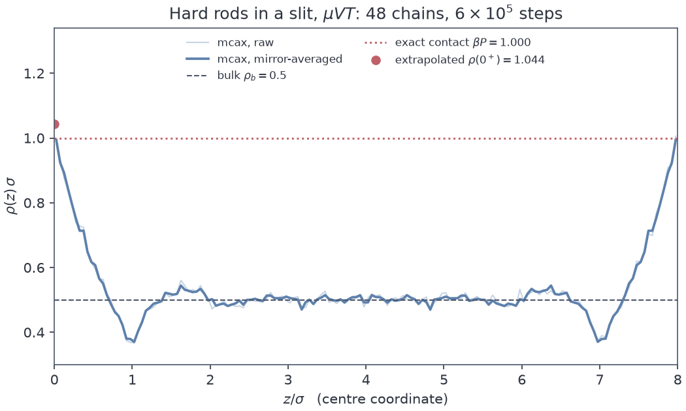

A JAX library · v0.1.0 · Apache-2.0
mcax puts hard-particle Monte Carlo inside JAX. One compiled call advances sixty-four independent chains at once, the grand-canonical acceptances are exact rather than approximated, and the one-dimensional case is checked against a closed form instead of against another simulation.

A Markov chain cannot be parallelised inside itself. Step
n+1 depends on step n, and no amount of hardware
changes that. This is the reason Monte Carlo has spent twenty years
watching molecular dynamics move onto GPUs without following it.
There is a second axis, and it has been there the whole time. Chains are
independent of one another, so a device can carry many of them at once. The
state becomes an array with a leading chain index, one vmap
advances the whole batch, and the sequential dependence stays where it
belongs: along an axis nobody was trying to parallelise anyway.
Two things follow that are worth more than the speed. Chain-to-chain scatter is an honest independent-replica error bar, so the usual estimate of an autocorrelation time before a number can be quoted is not needed for the between-chain part. And because the chains really are independent, adding chains buys effective sample size linearly, where extra draws down one chain buy nothing until that chain has mixed.
The compilation matters separately from the device. A Monte Carlo loop
written in NumPy spends on the order of a microsecond per step inside the
interpreter, which for a few hundred particles is more than the arithmetic
costs. Wrapping the sweep in jit and scan removes
that, and it removes it on a laptop as well as on a GPU.
Three routes exist for hard-particle Monte Carlo, and each gives up something specific.
mcax occupies the gap those three leave: hard cores, grand canonical, JAX-native, and validated against closed forms. It is one file of physics with no energies in it at all, because for hard particles the Boltzmann factor is an indicator function and the whole model is an overlap test plus three exact acceptances.
import jax; jax.config.update("jax_enable_x64", True)
from mcax import make_spec, burn_and_sample, summary, eos
rho_b = 0.3 / eos.B[3] # hard spheres at eta = 0.3
spec = make_spec(d = 3, H = 8.0, Lperp = 10.0, slit = True,
z_act = float(eos.z_of_rho(3, rho_b)))
res = burn_and_sample(spec, C = 64, seed = 0, n_burn = 200_000,
n_run = 1_000_000, thin = 500, nbins = 160)
print(summary(res.Ns)) # ESS, split R-hat
assert res.capacity_warning is None
res.z, res.rho # the density profileThe one-dimensional case is kept deliberately, and it is the reason to believe the other two. For hard rods, Tonks and Percus solved everything in closed form: the equation of state, the pressure, and the profile at a hard wall. A detailed-balance error, a factor of the volume in the wrong place, or a slip in the alive-mask fails there against an exact number rather than against another simulation carrying its own errors. In two and three dimensions the best references available are accurate to about a tenth of a percent, so a marginal disagreement is ambiguous. In one dimension it is a bug.
| Case | Reference | Reference accuracy | Measured rel. error | split R-hat |
|---|---|---|---|---|
| d = 1 bulk, η = 0.5 | Tonks and Percus | exact | 0.0021 | 1.001 |
| d = 2 bulk, η = 0.4 | Henderson | 0.1% | 0.0005 | 1.002 |
| d = 3 bulk, η = 0.3 | Carnahan and Starling | 0.1% | 0.0019 | 1.014 |
| d = 1 wall contact, η = 0.5 | ρ(0+) = βP, exact Tonks | exact | 0.0435 | 1.000 |
Measured on one GPU, 26 July 2026,
reproduced by scripts/validate.py --markdown
Every case asserts split R-hat alongside the density, and that is not decoration. On the first full run the three-dimensional case matched Carnahan-Starling to a tenth of a percent while its chains had not mixed at all, at R-hat 1.23: started empty at an insertion acceptance near one percent, they had spent the entire burn-in filling. The mean was right for the wrong reason, and only the mixing statistic noticed. Two changes fixed it. Ninety percent of the target occupancy is now seated on a lattice and melted in the burn, and each chain gets its own shuffle of that lattice rather than a shared one, since chains launched from identical configurations start with zero between-chain variance and make R-hat report agreement the sampler has not earned. The three-dimensional case then needed 32 chains and two million steps to clear the gate honestly, which is ten times the cost of the other three and worth paying.
Alongside the statistics, 102 fast tests pin the invariants that catch sampler bugs rather than confirm sampler statistics. No two live centres closer than one diameter, verified with a separate NumPy implementation of the boundary conventions so a geometry error cannot hide behind itself. The ideal-gas limit at vanishing core size, which tests the acceptances with the overlap test removed from the picture entirely. Accepted insertions balancing accepted deletions at equilibrium. Bit-exact reproduction from a seed. They run in 103 seconds on a laptop CPU.
Being written in JAX does not make this differentiable, and that is worth
saying before anything else, because the inference is natural and it is
wrong. Acceptance is a discrete accept or reject against a uniform draw. The
hard-core log-density is an indicator function with no gradient anywhere.
The grand-canonical state space is trans-dimensional, since the particle
number itself moves. A gradient of the profile with respect to the chemical
potential is not unimplemented here, it is undefined by this route.
Response functions come from fluctuation identities instead, where the
derivative with respect to beta mu is a sampled covariance, and
that is the supported answer.
Nmax
particles, and an insertion into a full chain is rejected. That is not a
Metropolis rejection: it truncates the ensemble and breaks detailed
balance. Nothing in a density profile would reveal it, so every result
carries a saturation figure and a warning that fires at 95 percent.The reason to want hard-particle Monte Carlo inside JAX rather than beside it is that the consumers are already there. Density-functional models, the training loops that fit them, and the solvers underneath are JAX code, and a sampler written in the same framework composes with them instead of exporting to them.
Ultimately that is what the library is for: grand-canonical ground truth generated inside a training loop rather than shipped to it as a frozen dataset, so the reference data can follow the model into whatever corner of the phase diagram the model wanders into.